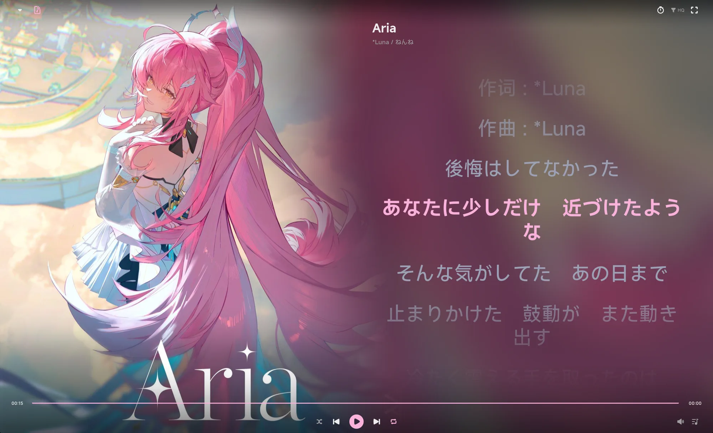
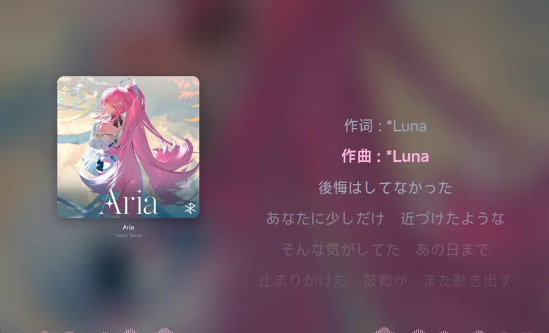

01
所有音源，住进同一扇窗
NT、KG、QM 三个在线音源，加上本地曲库与自建流媒体服务器， 在同一个界面里搜索、收藏、播放。登录态由本地凭据保险库保管，不上传。
立场
不塞广告。
不做遥测。
不要求管理员权限。
只做播放器该做的事：把音源整理好，把声音解出来，把界面交给你。 数据默认留在本机，凭据放进本地保险库，运行时不需要提权。

沉浸式播放页
三套播放页布局、逐字歌词、封面取色背景与 FFT 频谱。 声音在后台，画面在眼前。
产品
01
NT、KG、QM 三个在线音源，加上本地曲库与自建流媒体服务器， 在同一个界面里搜索、收藏、播放。登录态由本地凭据保险库保管，不上传。
02
解码、EQ、响度归一化、限幅、FFT 与变速变调都在 C 引擎里完成； 自研 Zig 内核按格式渐进接管。PCM 默认驻留内存，不写临时文件。
03
播放页布局、背景、封面转场、频谱、页面转场、侧栏、主题色与外观风格， 8 个样式域各自独立成模块。未知 id 安全回退，旧配置不会把界面弄坏。

功能
从在线音源到本地曲库，从解码到歌词，所有能力收在同一个播放器里。 没有广告位，没有账号体系，没有需要提权的后台服务。
NT、KG、QM 三个在线音源，另有默认关闭的实验性音源 NK。
多目录增量 / 全量扫描，坏文件隔离、元数据刮削与本地搜索索引。
EQ、响度归一化、限幅、FFT、变速变调，全部在 C 引擎内完成。
FFmpeg 保持默认主引擎，自研 Zig 内核逐格式接管，契约不变。
跨音源统一的收藏、新建、改名与增删歌曲，不绑定单一平台。
可选自建流媒体服务端，并聚合兼容协议的流媒体音乐库。
URL 解析与队列下沉到 Rust 原生层，支持续传，界面只做状态。
表现层对齐 AMLL：逐字动画、扫亮、景深、间奏点与人声行。
8 个样式域走「契约 + 注册表 + 独立模块」，换风格不改主体。
引擎
解码、DSP 与输出都在进程内的原生库里跑，Dart 只做调度和画面。
频谱数据经 pcm_window 取窗，不靠临时文件往返。
格式白名单含 FLAC、Opus、APE、DSD 等
Zig 内核按格式渐进接管
ReplayGain / R128 与运行时兜底增益
PCM 驻留内存，默认不落盘
样式
每个样式域由「契约 + 注册表 + 独立模块」三部分组成，消费方只解析偏好 id； 未知 id 一律回退默认项，旧配置不会把界面弄坏。
defaultfullscreenvutrongradientblursolidripplefluidcoverTonescaleslidefadebarswavewaveUpnonefadeslidezoomdefaultanimateddefaultcustomcoversolidsolidimage注册表与偏好白名单由守卫测试保证一致；新增一种样式只需要新建模块、登记 id、补文案。 详见 样式注册表文档 ↗。
界面
不是效果图，是应用本身的渲染结果：曲库、外观设置、Vutron 布局与发现页。 左右滑动，或用箭头翻页。
界面一览
曲库、设置与布局，都是真的。
01 / 04
左右滑动或使用箭头翻页 · 点击图片放大
开屏动效
曲线、间隔、透明度都取自 splash_screen.dart 与 bootstrap.dart：
Logo 上滑渐亮，字标逐字浮现，底部小字延迟上移，1.9s 后 550ms 淡出。
主色径向渐变淡入，easeOut
上移 16% 高度并渐亮，easeOutExpo
单字 420ms 浮现，easeOutCubic
上移并渐显到 40% 不透明度
EraAudio 时出现，终态 80%
透明度 1→0、缩放 1→0.98、上移 3%
系统开启「减少动态效果」时，开屏直接呈静态画面并跳过淡出——与应用的性能模式一致。
下载
桌面三端由 CI 从源码构建。Linux 各发行版在自己的容器里打包， 避免跨发行版链接到不同 soname 的 FFmpeg / TagLib。
.deb.rpm.pkg.tar.zst.AppImage.flatpak
Ubuntu 24.04 / Deepin 25 / Fedora / Arch，另有 NixOS flake 产物。
每个包内附 BUILD-INFO.txt，写明构建基线与最低 glibc。
安装包portable zip
Inno Setup 安装向导默认 per-user，不需要管理员权限； 也有解压即用的便携版，配置随身带走。
获取 Windows 版本 ↗.app
Intel 与 Apple Silicon 分别构建，产物随 Release 一并上传； 首次打开如遇 Gatekeeper 提示，请按文档放行。
获取 macOS 版本 ↗
发布产物附 .sig1 分离签名（ECDSA P-256 / SHA-256，key1），公钥随 Release 分发；
可用 bash app/tool/verify_release.sh <dir> 校验。项目以 AGPL-3.0-or-later 开源。
文档
架构、构建、样式契约、MCP 接入与隐私边界都写在仓库里。
这个页面本身也是纯静态文件，源码就在 site/。